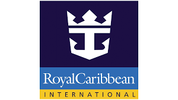
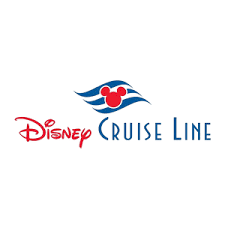
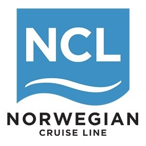

Capabilities & Use Cases
Where complexity meets predictability. See how the world’s most demanding marine, hospitality, and commercial operators leverage our curated manufacturing infrastructure to de-risk their supply chains.
Explore Our Proven EfficacyProviding the Infrastructure Behind Industry Leaders



We don't just supply products; we engineer reliability. From massive fleet-wide hardware rollouts to time-critical dry dock operations, our execution is industry-leading.
Scale & Consistency
Partner: Royal Caribbean International
The Challenge: Deploying complex, specialized refrigeration units (minibar fridges) across entire multi-vessel fleets. Requires exact marine-grade compliance, spatial integration standardizations, and massive volume capacity.
The DFWIN Execution: We aligned RCCL's strict engineering requirements directly with a specialized manufacturing partner within our infrastructure. We oversaw the entire bespoke production run, maintaining rigorous Quality Assurance protocols to ensure the highest standards upon delivery.
Time-Definitive Logistics
Partner: Celebrity Cruises
The Challenge: Hitting a strict 14-day international dry dock window. Even a 24-hour delay in the delivery of critical FF&E and hardware results in catastrophic operational losses.
The DFWIN Execution: Executed a flawless, multi-modal routing strategy from our primary hub in Yantian directly to the designated global port. Our end-to-end freight management guaranteed the arrival of all customized service trolleys and deck components precisely on schedule.
Durability Engineering
Partners: Disney Cruise Line & NCL
The Challenge: Terminal operations require hardware—such as luggage cage assemblies—that can withstand brutal, daily high-traffic use without structural failure.
The DFWIN Execution: We sourced raw, heavy-duty industrial materials and utilized our certified engineering infrastructure to fabricate custom, indestructible cage assemblies. We delivered robust hardware solutions that drastically reduced replacement cycles for both Disney and Norwegian Cruise Lines.
While our heritage is rooted in the high-stakes demands of the cruise industry, our certified manufacturing network is fully equipped for specialized industrial scaling. From commercial real estate development to heavy industry and architectural fabrication, our engineers apply the same rigorous QA and Lean protocols to ensure your complex procurement projects are executed flawlessly.
Proven, massive-scale logistics capacity handling routing from Yantian and Shanghai directly to Miami, LA, and Newark.
Our on-site Quality Assurance teams enforce strict international compliance standards prior to every shipment.
We engineer predictability, ensuring complex international supply chains remain unbroken.
Stop relying on unverified directories. Align your logistics with a manufacturing infrastructure built for scale and predictability.
Discover Your Supply Solution